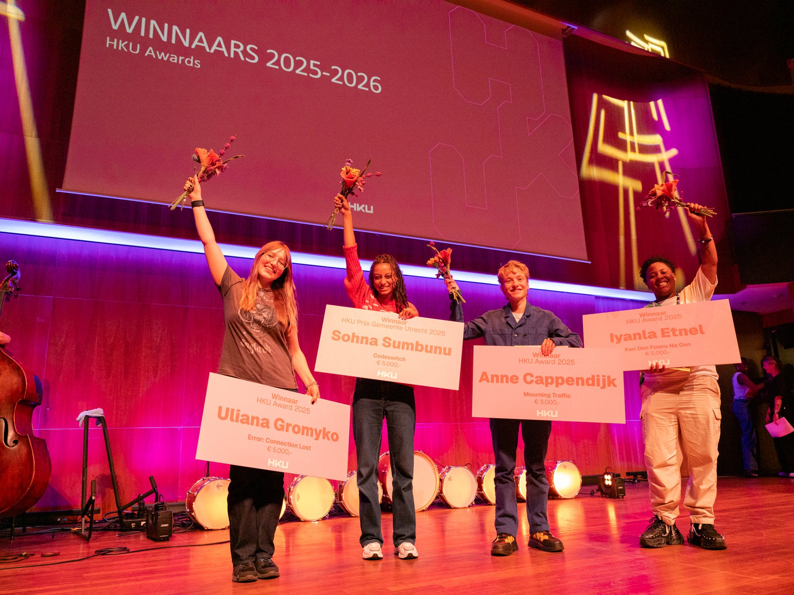
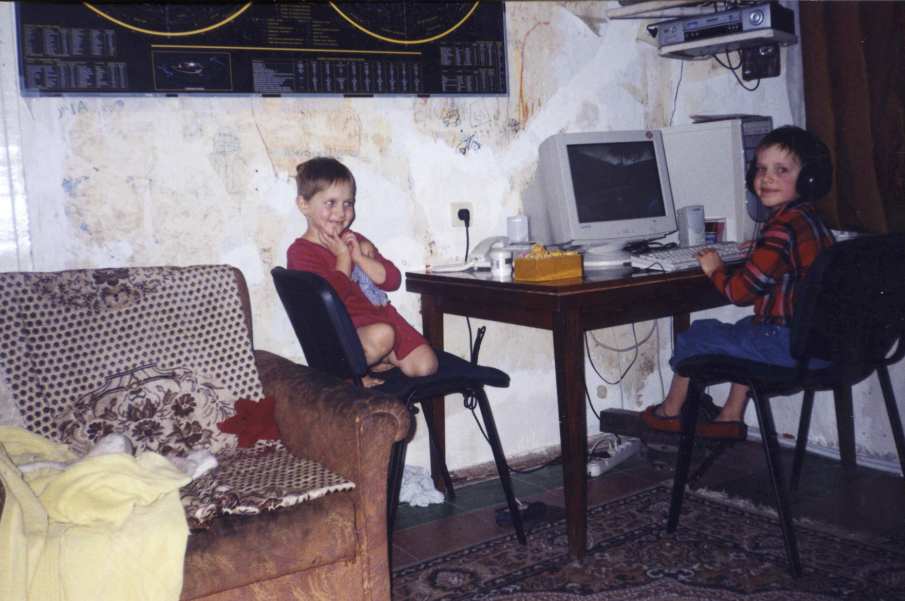

For my final graduation project I decided to focus on the software of the tools that I will be bound to use after graduating. I've researched and written
an extensive essay
  and at the same time I've started to learn coding on p5*js. I made a
little code every day for a month
, finding my style by trying to execute fun ideas and create math visualisers.
and at the same time I've started to learn coding on p5*js. I made a
little code every day for a month
, finding my style by trying to execute fun ideas and create math visualisers.
For my final project I had two vague ideas: create tools or create an interactive story. I've settled on making big tools and: I tried and failed once, I tried and succeeded the second time, I tried and actually had fun with my tool the third time.
A month before the deadline I was done, but it still felt empty, so I looked deep inside myself and asked myself "why is software so important for me?". I started writing and when I was finished, I was in tears, remembering how much a computer meant in my life and in my connection to my recently lost brother. I took what I've written and showed it to my teacher, who encouraged me to tell this story. It was a bit unrealistic to make a whole animation with the clanky tool that I've just made in such a short time. However I did not have time to hesitate. The deadline and the significance of the story forced me to create as concisely as possible. I have presented the animation together with the tool and the essay. I would be grateful to just receiving a 10/10 and being nominated for the HKU Award, but I got so much more. I
won the award
At the time I was also working fulltime as a creative coding intern at Studio Dumbar. Simultaneously preparing exhibitions was an challenging experience. And as exciting as it was, it was also overwhelming. After completing the internship and all of my exhibitions and film festivals, I have decided to slow down and take some time.
The story of my animation is based on real events and revolves around me and my brother growing up. I told the very personal tragedy involving my family migrating to the Netherlands and eventually breaking up, leading to my brother joining the Ukrainian army and disappearing during one of his missions. I wanted to create an animation with an experimental style and took something secret and personal to explore/laborte/tell/translate. It made the impact that I hoped it would; some audience members cried, some came up to me and told me how deep it impacted them, some were amazed at the minimalist yet effective storytelling, and some felt seen and understood.
As proud as I am of making the film, I have felt this lingering hesitation when showing off my deepest traumas. I also didn't want to be hung op on this great achievement and define myself by this one project. So to go forward and evolve as an artist, I dicided to hide this animation away and go on learing and looking for new opportunities.
- Exposure (graduation expo)
- HKU Awards
- Dutch Design Week 2025
- Stadhuis Utrecht
- Rietveld Paviljoen
- Kaboom Animation Festival
- Leiden Shorts
- Reggio Film Festival
- 25.06.2025 - 29.06.2025
- 18.09.2025
- 18.10.2025 - 26.10.2025
- 06.11.2025 - 27.11.2025
- 29.01.2026 - 15.02.2026
- 13.03.2026 - 22.03.2026
- 29.05.2026 - 02.06.2026